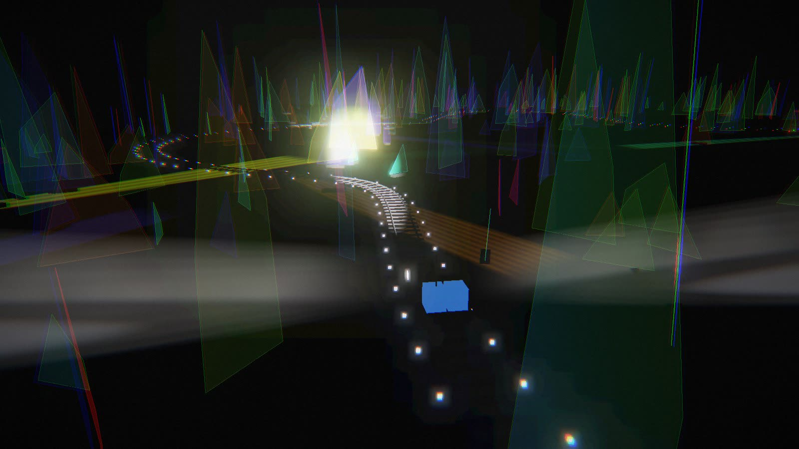
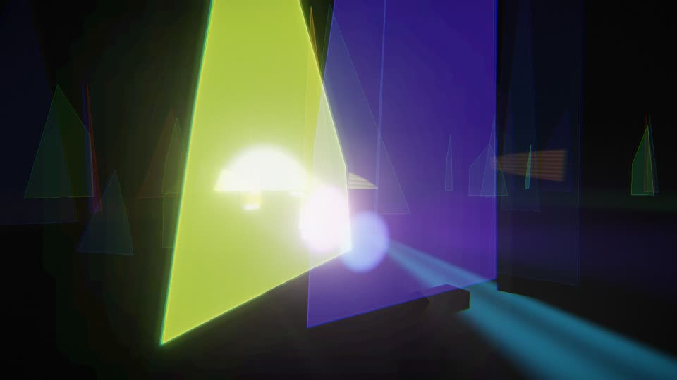
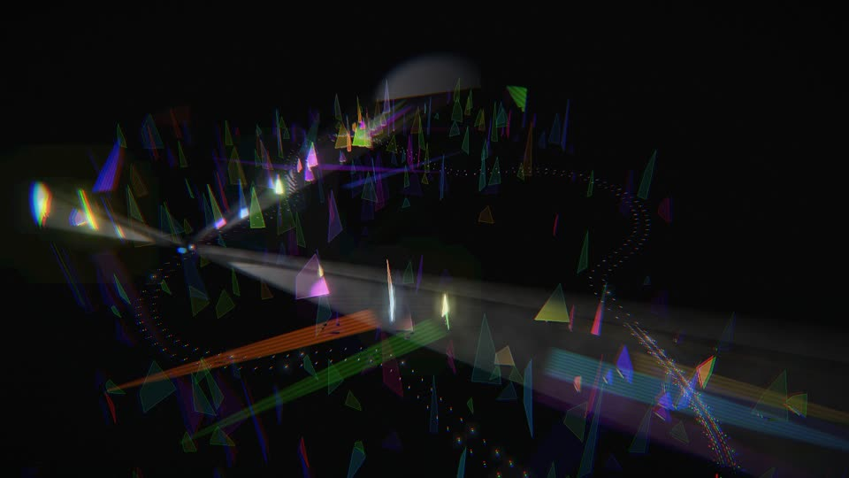
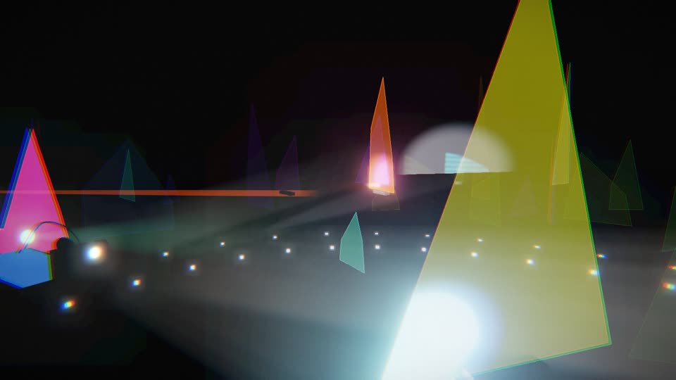

Преломление
На границе стекла свет замедляется примерно в полтора раза и поэтому поворачивает. Чем больше показатель преломления, тем сильнее луч прижимается к нормали.
n1·sin θ1 = n2·sin θ2
в ролике с 0:44
световая инсталляция в браузере
Игрушечная тележка с двумя прожекторами едет по тёмной комнате среди трёхсот дихроичных стёкол. Свет отражается и проходит насквозь, раскрашивает стены радугой, а музыка следует за светом.
Симулятор — для компьютера: WebGL и звук, лучше в Chrome, Safari или Firefox.обучающий ролик
Ведущий спрашивает, физик объясняет. Кадр из симулятора замирает и превращается в чертёж мелом: преломление, закон Снеллиуса, дисперсия в призме, радуга в капле и цветные стёкла, которые меняют цвет с углом.
физика за кадром
На границе стекла свет замедляется примерно в полтора раза и поэтому поворачивает. Чем больше показатель преломления, тем сильнее луч прижимается к нормали.
n1·sin θ1 = n2·sin θ2
в ролике с 0:44Показатель преломления у стекла немного разный для разных цветов: синий поворачивает сильнее красного. Белый свет — смесь всех цветов, и на границе смесь расходится веером, как у Ньютона с призмой.
n = n(λ)
в ролике с 1:18Капля — круглая призма: два преломления и одно отражение от задней стенки. Красный выходит под углом около 42°, фиолетовый — около 40°, поэтому радуга — дуга, и красный всегда снаружи.
красный ≈ 42°, фиолетовый ≈ 40°
в ролике с 1:50Покрытие из десятков слоёв тоньше длины волны отражает один цвет и пропускает остальные. Отражение и проход — дополнительные цвета, а с ростом угла пик сдвигается к синему.
λпик = λ0·√(1 − (sin θ / n)²)
в ролике с 2:14интерактив
Та же комната, что в ролике, только живая. Выберите форму трассы и зерно, и сцена соберётся заново: каждый код сцены даёт одну и ту же раскладку стёкол.



вдохновение
Prism Rail вдохновлён инсталляцией DEVIATION студии Свена Зауэра (@studiosvensauer), которую представила @visualatelier8. Через комнату ковром тянутся осколки стекла, собранные по всему миру. Под некоторыми углами обработанные осколки ловят свет и делят его стократно.
Битое стекло обычно выглядит тревожно: разбитые окна, следы беспорядков, острые края на границах. Работа опирается на тексты историка Рутгера Брегмана и показывает другое: в кризис люди сближаются, и доброты становится больше. Негатив громче, но история говорит, что сотрудничество побеждает. Осколки разрушения превращаются в отблески надежды.
Prism Rail — самостоятельная браузерная симуляция по мотивам: другие стёкла, своя трасса и генеративная музыка.